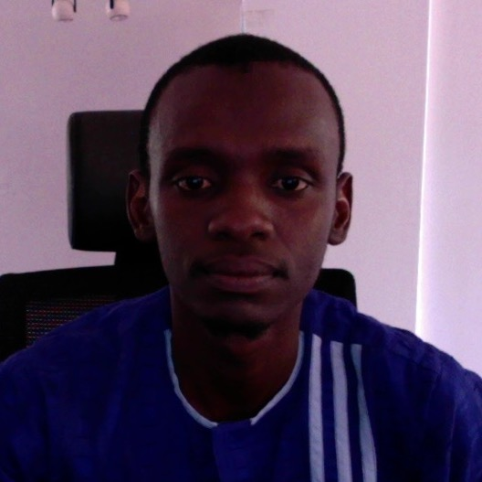

Dan Abdou Idi Soge Mahamadou
Developpeur
0022798022000
mahamadousaid@gmail.com
Experiences
Interne
Juin 2019 à Mars 2020-CNSEE/MESUD-Niamey
Collecte de donnees socio-economique
traitement d'image satelitaire
redaction de rapport
Coordinateur Regional Communication
Dec. 2018 à Dec 2019-IAAS Africa
Gestion des plates forme de communication
Elaboration des posters et flyers
redaction de rapport
Formation
MSc en Gestion de ressource Naturelle et Changement Climatique
Institution: Bayero University Kano (Nigeria)
Année :2015-2018Licence en Sciences Biologiques
Institution : Université Dan Dicko Dan Koulodo de Maradi (UDDM)
Année :2011-2014Baccalaureat (Serie D, Science)
Etablissement: Lycee Kassey Niamey
Année : 2009-2011
Competences
Outils Bureautiques:
logiciels et languages Informatique


Langues
Centre d'Interet
- Lecture
- voyage
- ecriture
- art
References
- Houssein Abyl,Developpeur
CODELOCCOL - Murtala Badamassi,environmentalist
Bayero University Kano